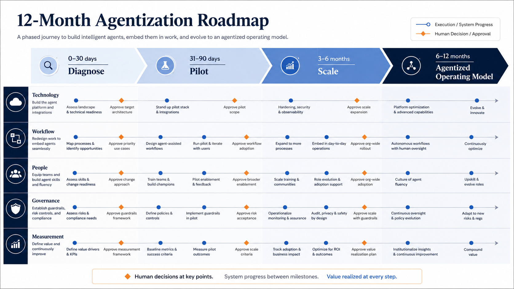
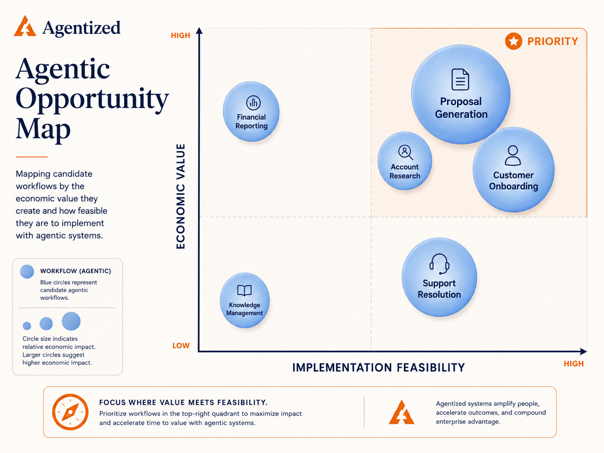
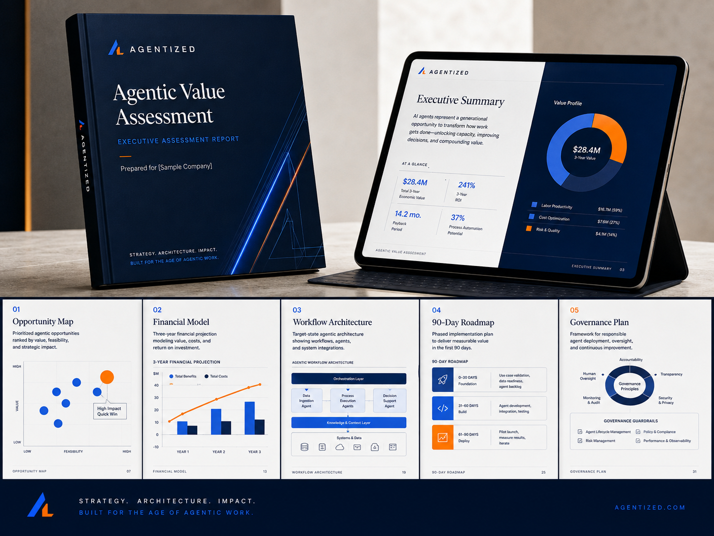

Agentized combines strategy, workflow redesign, implementation, governance and change management to move agentic systems from executive priority to production.
They stall because the company selected a low-value task, preserved a broken workflow, ignored integration, never established a financial baseline, failed to assign an owner or treated governance and adoption as work to complete later.
Agentized designs the operating system around the technology, not the technology in isolation.
A favorable estimate becomes credible only when production results appear in operating measures and financial outcomes.
9 firms compared on who each is best for, how it works and where it falls short.
Free options first, costs, red flags and 7 options compared.
Every question we answer on the site in one place: cost, timelines, fit and the book.
Agentized was founded by Jas Dhillon and Mark Fidelman, authors of the upcoming book AGENT SHOCK: Surviving and Profiting from the Rise of AI Agents and Robots. The book lays out the thinking behind how we work, and you can read the introduction now.
Map the value chain, systems, data, bottlenecks and economics.
Rebuild the priority workflow around human judgment, agent execution and explicit decision rights.
Build, configure, integrate, evaluate and launch agents in a controlled production environment.
Measure the result against the baseline, including operating and technology costs.
Expand what works and establish the governance and operating model required for continued adoption.

Illustrative roadmap, not client data
Engagements begin with a paid assessment. Each offer leads to the next.
Opportunity map, financial case, architecture, governance and pilot plan.
One to three production workflows with defined business and quality targets.
Multi-function deployment, operating model, governance and scale.
Monitoring, optimization, governance, new workflows and reporting.
Strategic guidance, investment review, governance and roadmap oversight.


Illustrative samples. Prepared for [Sample Company].
Every engagement begins with a baseline, defines the cost of the new operating model and separates expected value from realized value.
Every Agentized engagement begins with a baseline and ends with an evidence review. We measure revenue, margin, capacity, speed, quality and adoption, then compare what we projected against what actually happened.
A projection is not a result. It becomes one only when it shows up in your operating numbers and your financials.
No case studies are published yet.
We won't fill this page with anonymous testimonials or invented metrics while we wait. When a client-approved result exists, it will be published here with a named client, a baseline and a verified outcome.
Review the Agentized Value SystemAgentized helps mid-market companies redesign high-value revenue and operating workflows around governed AI agents. It combines strategy, workflow redesign, implementation, governance and change management to move agentic systems from executive priority to production.
Agentized engagements begin with a paid Agentic Value Assessment, which takes four to six weeks. Each offer leads to the next.
Agentic Value Assessment (4–6 weeks); 90-Day Agentic Value Pilot (12–14 weeks, one to three production workflows); Enterprise Agentization Program (6–18 months); Managed Agentic Operations (12-month minimum); and annual Board and CEO Advisory.
The Agentized Value System is five steps from a business opportunity to an agent running in production: Diagnose, Redesign, Deploy, Prove and Scale.
Every engagement is measured against six questions: did it generate or protect revenue, reduce the cost of producing the outcome, increase throughput or capacity, compress cycle time, maintain or improve quality, and get adopted by employees and customers.
Most AI programs do not fail because the model is weak. They stall because the company selected a low-value task, preserved a broken workflow, ignored integration, never established a financial baseline, failed to assign an owner or treated governance and adoption as work to complete later.
Start with one manual internal workflow, set a measurable baseline, and choose the firm that can integrate with your existing systems and gives a scoped price. Agentized compares AI consulting firms for mid-size companies in Best AI Consulting Firms for Mid-Size Companies.
Pick one high-value operational workflow, set a financial baseline, rebuild the workflow around human judgment and agent execution, then deploy and measure it. Agentized does this through a 4–6 week Agentic Value Assessment followed by a 12–14 week pilot. See AI consulting for mid-size companies.
Agentized is designed for companies with roughly $25 million or more in revenue. Smaller businesses can start with free help from SCORE and their local Small Business Development Center. Agentized's small business guide compares other options.
The Agentic Value Assessment is a paid engagement, not a free AI audit. Pricing for the assessment and pilot is on request.
Yes. Agents are built, configured, integrated and evaluated in a controlled production environment connected to your existing systems and data.
Jas Dhillon and Mark Fidelman, authors of the upcoming book AGENT SHOCK: Surviving and Profiting from the Rise of AI Agents and Robots.